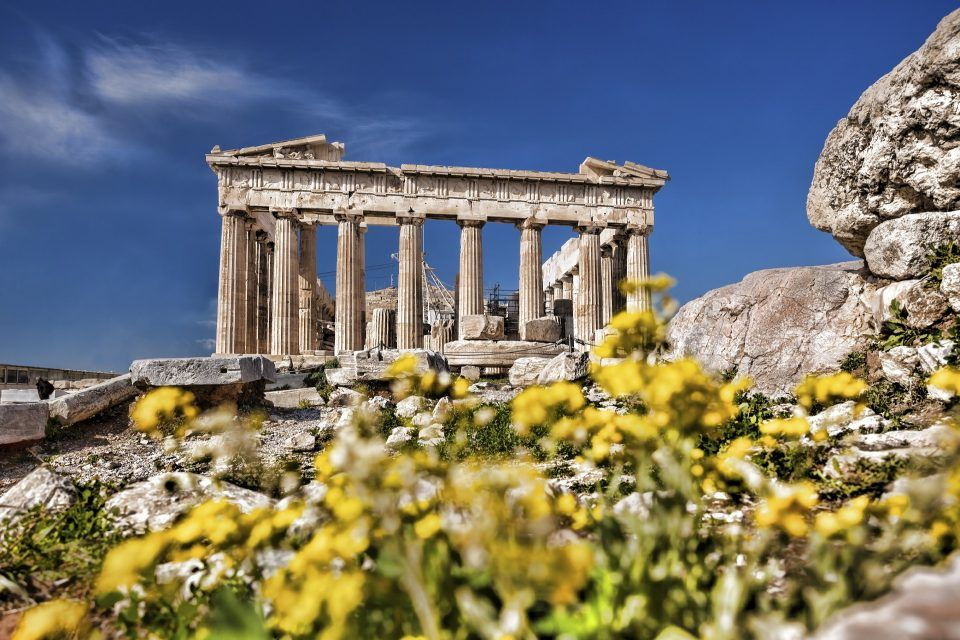
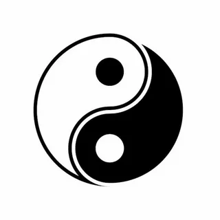

Философия великих людей
Исследуйте мудрость веков через учения великих философов, чьи идеи изменили мир и продолжают влиять на наше мышление сегодня.
Сократ
Древнегреческий философ, чьи идеи заложили основы западной философии. Известен своим методом диалога и принципом "Познай самого себя".
Платон
Ученик Сократа и учитель Аристотеля. Основатель Академии в Афинах. Разработал теорию идей, согласно которой материальный мир является лишь отражением мира идеальных форм.
Аристотель
Ученик Платона, основатель лицея в Афинах. Его работы охватывают множество предметов, включая физику, биологию, метафизику, логику, этику, эстетику, поэзию, театр, музыку, риторику, психологию, лингвистику, экономику, политику и правительство.
Галерея великих мыслителей
Философия сегодня
Современная философия продолжает исследовать фундаментальные вопросы о существовании, знании, ценностях, разуме и языке. Несмотря на технологический прогресс, основные философские проблемы остаются актуальными.
Философские концепции помогают нам осмыслить такие современные вызовы, как искусственный интеллект, биоэтика, экологический кризис и природа сознания.
Западная философия
Западная философская традиция начинается в Древней Греции и проходит через средневековую схоластику, эпоху Просвещения, немецкий идеализм к современной аналитической и континентальной философии.
Восточная философия
Восточные философские традиции, включая индийскую, китайскую, японскую и персидскую философию, развивались параллельно западной, но с акцентом на гармонию, целостность и духовное просветление.
Этика
Раздел философии, изучающий мораль, добро и зло, обязанности и добродетели. Этика помогает определить, как человек должен действовать.
Эпистемология
Теория познания, исследующая природу, границы и критерии знания. Что значит знать что-то? Как мы можем получить знание?
Метафизика
Область философии, изучающая фундаментальную природу реальности, включая понятия существования, объектов и их свойств, пространства и времени, причинности и возможности.